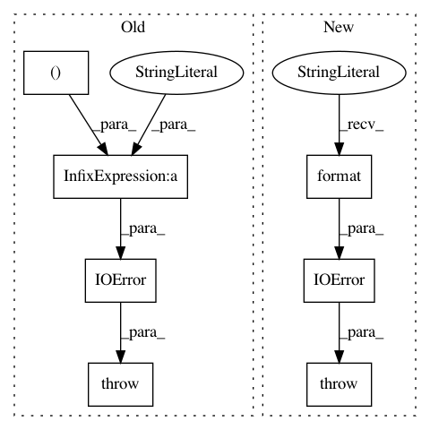

8cc71ca5ffb2912d37fa8c7528bc8388c3429935,fonduer/parser/doc_preprocessors.py,DocPreprocessor,_get_files,#DocPreprocessor#Any#,54
Before Change
if len(fpaths) > 0:
return fpaths
else:
raise IOError("File or directory not found: %s" % (path,))
class TSVDocPreprocessor(DocPreprocessor):
Simple parsing of TSV file with one (doc_name <tab> doc_text) per line
After Change
if len(fpaths) > 0:
return fpaths
else:
raise IOError("File or directory not found: {}".format(path))
class TSVDocPreprocessor(DocPreprocessor):
Simple parsing of TSV file with one (doc_name <tab> doc_text) per line
In pattern: SUPERPATTERN
Frequency: 3
Non-data size: 7
Instances
Project Name: HazyResearch/fonduer
Commit Name: 8cc71ca5ffb2912d37fa8c7528bc8388c3429935
Time: 2018-07-06
Author: lwhsiao@stanford.edu
File Name: fonduer/parser/doc_preprocessors.py
Class Name: DocPreprocessor
Method Name: _get_files
Project Name: tensorflow/models
Commit Name: 9d0f41b74d83334bc88c06fe449804dd8e2bd92b
Time: 2018-10-16
Author: shallue@google.com
File Name: research/astronet/astronet/data/preprocess.py
Class Name:
Method Name: read_light_curve
Project Name: RaRe-Technologies/gensim
Commit Name: 3a546ca485d3b374ad9bf0e1a3296a850b372d1a
Time: 2016-09-19
Author: mfortier@patsnap.com
File Name: gensim/similarities/index.py
Class Name: AnnoyIndexer
Method Name: load